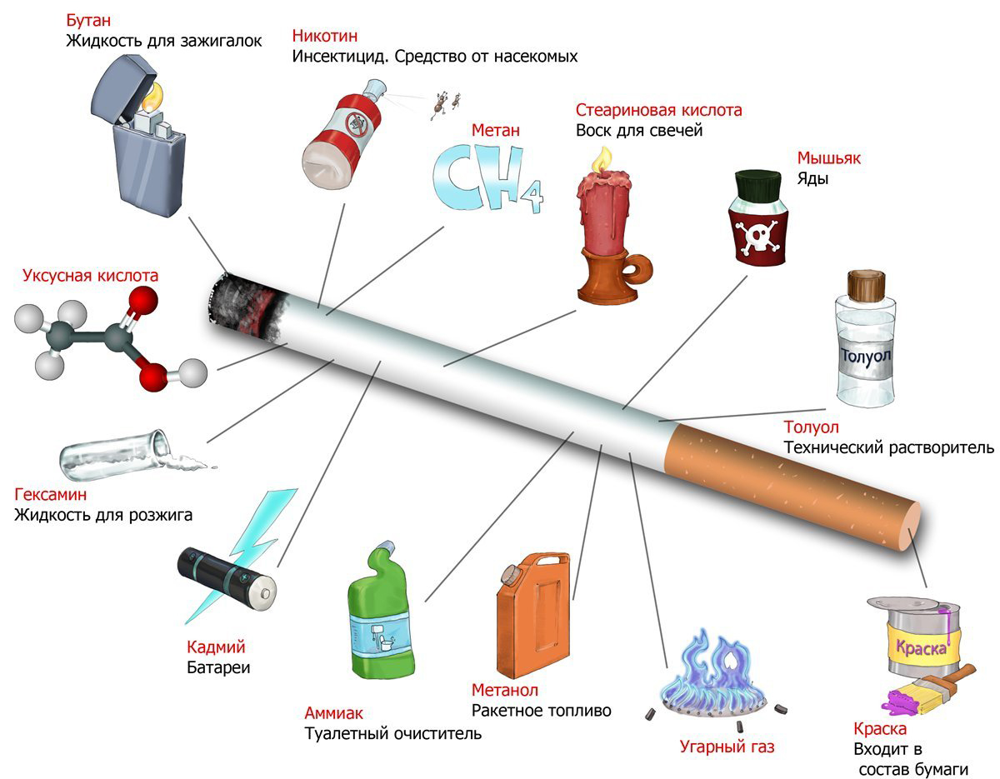

Давно известно, что курение не приносит организму пользы. Об этом знают все, но всем наплевать на предупреждения о вреде курения, озвученные родным Минздравом. Никого не страшат истории о раке легких, особенно когда в кармане нездорового вида врача, потешающего своих пациентов этими ужастиками, четко угадываются очертания сигаретной пачки.
Не испугать сегодняшнего здорового и крепкого парня разговорами о раке легкого. «Мой дед курил до 90 лет, а умер от пьянства». Что тут возразить? Не страшное это заболевание, тем более, что осведомленность о нем совсем не на уровне. Может быть, поэтому в некоторых странах решили несколько видоизменить стандартные предупреждения, поместив на пачках вместо них фотографии органов, пораженных болезнями.
Еще можно говорить с курильщиками об «интересных» и, главное, понятных им заболеваниях. Тут для женщин и мужчин нужен разный подход. Исследования показывают, что компоненты сигаретного дыма разрушают коллаген – основной структурный белок кожи. Это означает, что курение реально старит кожу, добавляя преждевременных морщин.
Это для женщин. А что же страшит мужчин? Недавний опрос среди англичан показал, что больше, чем рак, СПИД и даже смерть, их страшит импотенция. И это на руку борцам с курением, ведь, как установили ученые, никотин может стать причиной мужского бессилия. Подсчитано, что в Великобритании импотентами из-за увлечения курением стали 120 тысяч человек от 30 до 40 лет.
Почему так происходит? Никотин сужает сосуды, в том числе и те, которые осуществляют кровоснабжение полового члена, а ведь в механизме эрекции значение притока крови – первостепенное. Кроме того, он участвует в развитии атеросклероза, который, в свою очередь, сужает сосуды таза, уменьшая приток крови. Причем эффект от курения есть как острый, непосредственный, так и хронический.
Между прочим, придуманы гибрид между первым и вторым описанным здесь способом «запугивания» курильщиков. Предлагается помещать на пачки аллегорическую картинку, где опадающий с сигареты пепел символизирует то, что происходит при курении с мужским достоинством. Обычные надписи о связи импотенции с курением также уместны.
Особенно сильно проявляется отрицательное влияние сигарет на потенцию при уже имеющемся повышенном давлении. Гипертония сама является фактором, увеличивающим риск полового бессилия, грешат этим и некоторые препараты для ее лечения. Однако если больной еще и курит, риск повышается в 26 (!) раз. Врачи полагают, что всех гипертоников нужно специально предупреждать об этом.
Наверно, с профилактической точки зрения правильней было бы заверить курильщиков, что если они бросят сигареты, все снова будет нормально, но это не так.
Даже у бывших курильщиков с высоким давлением, отказавшихся от этой привычки, риск импотенции в 11 раз выше, чем у тех, кто не курил. Напрашивается грустный вывод: начинать курить не надо, и учить этому необходимо начиная со школы, потому что потом может быть поздно.